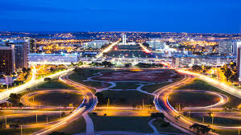

| Brasília | Descrição da Cidade |
|---|---|
|  |
Brasília, inaugurada como capital do Brasil em 1960, é uma cidade planeada que se distingue pela sua arquitetura branca e moderna, essencialmente concebida por Oscar Niemeyer. Disposta em forma de avião, a sua "fuselagem" é o Eixo Monumental, 2 avenidas amplas flanqueadas por um enorme parque. No "cockpit" encontra-se a Praça dos Três Poderes, cujo nome provém das 3 agências do governo que a rodeiam. |
Brasília é a capital federal do Brasil e a sede do governo do Distrito Federal. Está localizada na região Centro-Oeste do país, ao longo da região geográfica conhecida como Planalto Central. Segundo estimativa do Instituto Brasileiro de Geografia e Estatística (IBGE) para 2016, sua população era de 2 977 216 habitantes (4 284 676 em sua área metropolitana), sendo, então, a terceira cidade mais populosa do país. Brasília é também a quinta concentração urbana mais populosa do Brasil. A capital brasileira é a maior cidade do mundo construída no século XX. |